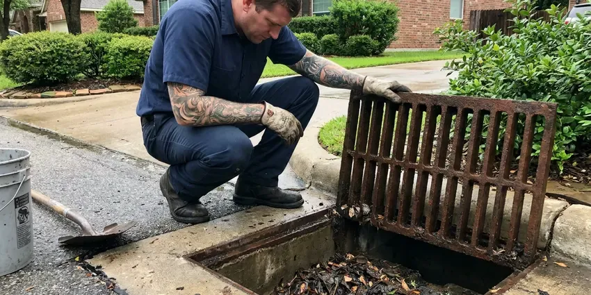

Clogged Sewer Line in Blaine, MN
No cleanout and a backed up main in Blaine, MN? We can go in through a toilet or the roof vent, then install a cleanout so next time is easier.
- Line Locating and Depth Readings
- Cleanout Installs
- Full Line to the Street
- Camera Video on Every Main
Get the Sewer Flowing in Blaine, MN
If the pipe is sound, we will tell you cleaning is enough. No pressure to replace.
Sewer Line Clearing for Homes and Businesses in Blaine, MN
CNV Plumbing has pulled roots, grease, wipes and pieces of collapsed clay pipe out of sewer lines. Very little surprises us. After clearing, we show you the footage, explain what caused the clog and tell you plainly whether the pipe needs work or just regular cleaning.
Some of what we do:
- Wipe and grease blockage clearing
- Root cutting with drum sewer machines
- Line locating to mark damage from above

Additional Plumbing Maintenance Services in Blaine, MN
Our maintenance and specialty plumbing services in Blaine, MN catch small problems before they become emergencies.


Customers
Why Choose CNV Plumbing for Clogged Sewer Line in Blaine, MN?
We do not guess about what is in your pipe. We look first, always. Every main line clearing ends with a camera pass, which means repairs are based on what you saw on screen.
- Line Locating, A locator marks the depth and position of any problem from above ground.
- Full-Length Clearing, We run the cable or jetter all the way to the city tap or septic tank.
- After-Hours Help, We respond to backups nights and weekends.
Citywide Coverage
Our crews cover Blaine, MN and the towns around it. Every call is fully equipped. From the center of town to the outer edges, we can usually get a truck to you that day.
Experienced Team
Our plumbers are licensed and insured in Minnesota. Everyone is screened. They wear protective gear on sewer calls, lay down floor protection and clean and disinfect the area around the cleanout or fixture before they leave.
Safety-First Approach
Sewage carries bacteria and viruses. That calls for care. Our crews wear gloves, eye protection and boots on every sewer call, contain any spill and clean and disinfect the work area before they pack up.
Trusted Certified Blaine Plumbing Services Professionals
At CNV Plumbing, we are proud to offer certified plumbing services throughout Blaine, MN. Those papers on the wall mean something. Every repair, install and maintenance visit follows strict safety and quality rules, and the plumbers doing the work carry recognized industry credentials.
Call Us Now PHCC Plumbing Contractor Recognition
PHCC Plumbing Contractor Recognition Better Business Bureau (BBB) Accreditation
Better Business Bureau (BBB) Accreditation Angi Certified Pro
Angi Certified Pro ISO 9001 Quality Management Certification
ISO 9001 Quality Management CertificationWhat Our Sewer Clearing Covers in Blaine, MN
Grease and Wipes Sewer Blockages in Blaine, MN
Flushable wipes do not break down the way toilet paper does. They stay intact for weeks. Mixed with grease that hardened in the main, they make a plug that a cable can only partly clear. Jetting scours the walls and flushes the debris downstream. Wipes belong in the garbage.

Residential Clogged Sewer Lines in Blaine
Most home sewer clogs come from three things: roots, grease and wipes. Often all three together. Grease coats the pipe, wipes snag on the coating and roots growing through a joint hold the whole mass in place until the line stops. We clear it with a sewer machine, then camera the line to see which one started it.
Emergency Sewer Line Clog Clearing in Blaine, MN
A fully blocked sewer will push raw sewage out the lowest drain in the building. Often the basement or a shower. CNV Plumbing sends an emergency tech across Blaine, MN with the full kit, clears the line from the cleanout and contains the spill so it does not spread across more flooring. We disinfect the area before we leave.
Commercial Sewer Line Clearing in Blaine, MN
A backed up sewer at a restaurant or office means closing the doors. Every hour costs money. CNV Plumbing clears commercial mains with heavy sectional machines and a high-flow jetter, scheduling the work for off hours when that helps. Kitchen mains need jetting.
Commercial Clogged Sewer Line Service in Blaine
Commercial sewer lines in Blaine carry far more than a house does. Kitchen grease is the big one. CNV Plumbing clears restaurant mains, apartment laterals and office drains with heavy equipment, and we can set up a jetting schedule to keep the line open between grease trap pumpings.
Sewer Cleanout Installation in Blaine
Some older homes have no cleanout at all. Each clog costs more without one. Without one, a plumber has to pull a toilet or climb on the roof to reach the main, so we install a two-way cleanout near the foundation that gives direct access upstream and downstream. Future clearing gets cheaper and faster.
Tree Root Invasion Removal in Blaine
Roots find sewer lines by following moisture in the soil. A hairline gap is enough. Once inside, they spread into a net that traps everything moving through. We cut them out with a root saw on a sectional machine, then camera the line to see how many joints are letting roots in. Lining or replacement seals the joints for good.

Main Line vs. Branch Line Clogs in Blaine, MN
One slow drain is a branch clog. More than one usually means the main. Water rising in the shower when you flush is a strong sign the clog is past the point where those two lines join, so the pattern of slow drains tells us where to go in. The right entry point saves time.
A Sewer Technician Near You in Blaine, MN
Searching "clogged sewer line near me" in Blaine, MN usually means water is coming up somewhere it should not. Stop using water first. CNV Plumbing keeps sewer trucks out in the area, so a technician with a sewer machine, a jetter and a camera can usually reach you within a few hours.
Our phones are answered at night and on weekends. Backups pick bad times. With trucks spread across Blaine, a Sunday backup can usually be cleared that same day instead of waiting for Monday morning.
CNV Plumbing at a Glance
- Fully licensed plumbing team covering Blaine, MN
- 24/7 emergency service with same-day scheduling
- Clear written estimates, no hidden fees
- 4.8-star rated by 501+ Minnesota customers
Blaine Map
Blaine Information
- Population
- 73,774
- Area codes
- 612/507/320
- Service area
- Blaine and towns within a 40 mile drive
- Nearby
- Coon Rapids, Brooklyn Park, Maple Grove, Minneapolis
Glacial clay and sandy soils are both common in Minnesota, and deep frost causes the ground to heave and settle each year. Roots chasing moisture find even a hairline gap in an old joint in Blaine, MN, so clearing the line and checking it on camera beats waiting for sewage on the floor.
Expert Services
Reach out to CNV Plumbing for reliable plumbing work done by licensed pros in Blaine, MN.
Our Specialized Plumbing Services in Blaine, MN
At CNV Plumbing, you get every kind of plumbing service from one company across Blaine, MN. From leak detection to full system installs, our team works fast and charges fair prices on homes and commercial properties alike. Here are the core services we offer:


How We Clear a Sewer Line in Blaine, MN
From the first call to a camera-checked line, this is the order we work in.
Describe the Backup
Call (612) 712-9569 and tell us which drains are backing up. Tell us if water is on the floor.
Clear the Main
We open the cleanout and clear the line with a sewer machine or jetter. Then we run water to check flow.
Camera and Advise
We camera the line and show you the footage. You hear about repairs only if they are needed.
Frequently Asked Questions About Clogged Sewer Line in Blaine
Clearing a clogged main in Blaine usually runs $250 to $800. It depends on the method. A simple cabling through an accessible cleanout sits at the low end, while heavy root cutting, jetting or a line with no cleanout pushes the price toward the top of that range or past it. We give you the number first.
One to three hours for most clearings. Simple ones take an hour. Heavy root masses, lines without a cleanout or a clog caused by broken pipe can stretch the job to most of a day, especially when a repair has to be dug after the clearing. We give you a time estimate up front.
Yes, if sewage is coming into the house. Quit flushing right away. Raw sewage carries bacteria that can make people and pets sick, so keep everyone clear and call us. We answer after hours.
Jetting blasts high-pressure water through the sewer line to scour the walls. It cleans the whole pipe. It removes grease, scale and fine roots that a cable misses, so results last longer. It works well on lines that clog over and over.
Usually you own the lateral. The street main is theirs. Your responsibility typically runs from the house to the property line or the city tap, though the exact split depends on your local rules and sometimes the cleanout location. Our camera and locator show where the clog is.
Several drains slowing down at once. That is the big one. Gurgling toilets, sewage smells in the house and water coming up in the shower after a flush point to the main. In Blaine, roots are often behind it.
Most main line clearings take one to two hours. Roots can slow it down. Severe root intrusion, lines with no cleanout or very long runs to the street can add time, and a camera inspection adds roughly 30 to 60 minutes once the line is open. We give you an estimate first.
RIDGID sewer machines and cameras do most of our work. We trust them. Our jetters are sized for residential and light commercial lines, and we carry nozzles for roots, grease and general cleaning that we swap based on what the camera shows. Every machine is serviced on schedule.
Hear From Customers Who Hired Our Plumbing Experts

Patricia H.
We had a slab leak that two other companies could not find. CNV Plumbing located it in under an hour with a listening device. They rerouted the line through the attic instead of breaking up the floor, so we kept our kitchen tile.
Slab Leak Repair · Maple Grove, MN
Nathan E.
Our tankless heater kept throwing an error code and shutting off mid shower. The tech flushed the heat exchanger, which was full of scale, and replaced a bad flow sensor. Hot water has been steady for half a year now.
Water Heater Repair · Coon Rapids, MN
Brian W.
I smelled gas behind the dryer and called right away. The plumber found a corroded flex connector, replaced it, and pressure tested the whole line before turning the gas back on. He let me watch the gauge hold steady for fifteen minutes.
Gas Line Repair · Plymouth, MNAngela D.
Our sump pump quit during a storm and the water was an inch from the basement carpet. CNV Plumbing put in a new pump with a battery backup that same evening. We have had two heavy rains since. It kicked on both times.
Sump Pump · Maple Grove, MNCarlos V.
Our house still had galvanized pipe, and upstairs the shower was a trickle. The crew repiped everything in PEX over three days and patched every drywall hole before they left. The pressure difference is night and day.
Repiping · Brooklyn Park, MN
Marcus H.
Grease from the fryer line kept clogging the kitchen drain at my diner. CNV Plumbing hydro jetted the line after closing, showed me the buildup on camera, and set us up on a quarterly cleaning so it does not catch us on a Friday again.
Drain Cleaning · Minneapolis, MN